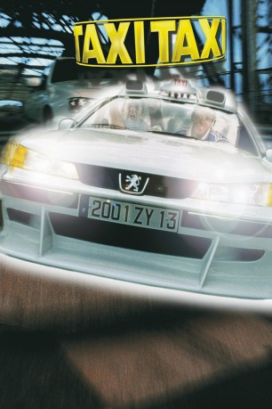

#202 Taxi 2 - Taxi Taxi
 
 IMDB-Wertung: 6.5 / 10
IMDB-Wertung: 6.5 / 10  Metascore: 0
Metascore: 0 
Daniel ist der rasanteste Taxifahrer Marseilles, weswegen er auch seinem Schwiegervater in spe auf die Schnelle aushelfen muss. Der hochrangige französische General hat nämlich völlig die Ankunft des japanischen Verteidigungsministers vergessen. Am Flughafen eingetroffen, muss Daniel seiner Fahrkünste wegen dem hohen Besuch gleich noch eine polizeichlich entwickelte Anti-Terror-Limousine vorführen. Was dabei keiner ahnt: Yakuzas haben es auf Leib und Leben des fernöstlichen Staatsmannes abgesehen und liegen bereits im Hinterhalt.
Jahr: 2000
Dauer: 88 Minuten
FSK: 12
Land: Frankreich Studio: Tobis StudioCanalTonspuren: DTS-HD - ,
Untertitel: Deutsch, Französisch,
Auflösung: 1080p (1916×816) Größe: 11161 MB
Genre: Action, Komödie, Krimi
Regisseur: Gérard Krawczyk
Drehbuch: Luc Besson
Soundtrack: Al Khemya
Darsteller:
 Samy Naceri als Daniel Morales
Samy Naceri als Daniel Morales Marion Cotillard als Lilly Bertineau
Marion Cotillard als Lilly Bertineau Bernard Farcy als Commissaire Gibert
Bernard Farcy als Commissaire Gibert- Jean-Christophe Bouvet als Général Edmond Bertineau
- Tsuyu Shimizu als Yuli
- Michel Muller als Pregnant woman's husband
 Cyril Raffaelli als Karate instructor
Cyril Raffaelli als Karate instructor- François Nguyen als Belote player
 Nicky Naudé als Swimming man
Nicky Naudé als Swimming man- Luc Besson als Boat Owner , uncredited
- Frédéric Diefenthal als Émilien Coutant-Kerbalec
- Emma Wiklund als Petra
- Frédérique Tirmont als Mother
- Marc Faure als French minister
- Haruhiko Hirata als Japanese minister
- Ko Suzuki als Katano
- Yoshi Oida als Yuke Tsumoto
- Kentaro als Yakuza
- Hiro Uchiyama als Master hypnotist
- Onochi Seietsu als Master hypnotist
 Edouard Montoute als Alain
Edouard Montoute als Alain- François Cottrelle als Plainclothes cop at airport
- Tewhik Behar als Djamel
- Jean-Louis Schlesser als Jean-Louis
- Henri Magne als Co-Pilot
- Miren Pradier als Pregnant woman
- Richard Guedj als Doctor
- Jean-Luc Borras als Bookseller
- Sébastien Thiery als Driving instructor
- Louis-Marie Nyee als Belote player
- David Moulin als Belote player
- Jean-Luc Mehler als Old cop at radar
- Jean-François Regazzi als Deputy chief at radar
- Dominique Chevalier als Traffic controller
- Franck Maigne als Assistant traffic controller
- Hiroyuki Yanagisawa als Japanese ambassador
- Emile Gerard als Lieutenant-colonel Bertrand
- Shirley Bousquet als Swimming woman
- Jean-Claude Houbart als Green light driver
- Christophe Gorlier als Expert chief
- Maïdi Roth als Driving school student
 Philippe du Janerand als Passenger
Philippe du Janerand als Passenger- Eric Challier als Cop at police station
- Jacques Buron als Colonel Picard
- Stephane Aizac als GIGN soldier
- Sébastien Pons als Rachid
- Malek Bechar als Marco
- Michel Elias als Rally speaker
- Pierre Brichese als Cop at police station
- Fédélé Papalia als Park keeper
Datei: X:\6-Hexalogie(A-Z)\Taxi\Taxi 2 - Taxi Taxi (2000, FSK12, 1916x816).mkv seit 14.02.2015
Festplatte: HD Collection-3(N-Z)-6(A-Z)
 Es gibt insgesamt 9 Filme in der Gruppe '6-Hexalogie(A-Z)\Taxi'
Es gibt insgesamt 9 Filme in der Gruppe '6-Hexalogie(A-Z)\Taxi'